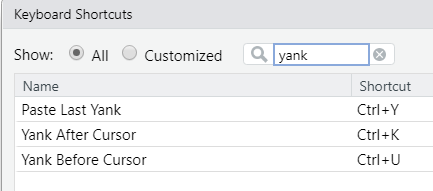

#' Qualtrics Survey ID's and Names of Grounds Shovel Surveys
#'
#' These are the Qualtrics route checklists that the snow shovelers fill out after they
#' complete their routes each day, even if no action is required.
#'
#'
#' @format
#' `gss`: a data-frame containing Qualtrics survey identifiers
#' with `r formatC(nrow(gss), format="d", big.mark=",")` rows, and `r ncol(gss)` columns:
#' \describe{
#' \item{id}{Survey ID.}
#' \item{name}{Survey name.}
#' }
#'
#' @source <https://uoguelph.eu.qualtrics.com>
"gss"Appendix A — notes
Many tips from https://appsilon.com/rstudio-shortcuts-and-tips/
A.1 R Profile/Environment
From Advanced R:
a logical vector of length greater than 1, which generates a warning:
if (c(TRUE, FALSE)) 1
#> Warning in if (c(TRUE, FALSE)) 1: the condition has length > 1 and only the
#> first element will be used
#> [1] 1CopyIn R 3.5.0 and greater, thanks to Henrik Bengtsson, you can turn this into an error by setting an environment variable:
Sys.setenv("_R_CHECK_LENGTH_1_CONDITION_" = "true")
if (c(TRUE, FALSE)) 1
#> Error in if (c(TRUE, FALSE)) 1: the condition has length > 1CopyI think this is good practice as it reveals a clear mistake that you might otherwise miss if it were only shown as a warning.
A.2 Documenting package data
NB If you rename data in data/, you will need to still run use_data() to have the data enter the namespace and not cause an error in data.R’s documentation.
Use data.R inside R/. E.g.
A.3 Selection
In RStudio, you can write and edit in more than one place at a time with multiple cursors. Press Ctrl + Alt + (Up/Down) to create a new cursor in the direction in which you press. If you want to quickly select more lines use Alt and drag with the mouse to create a rectangular selection, or Alt + Shift and click to create a rectangular selection from the current cursor position to the clicked position.
This way of editing may look intimidating at first, and may not be easy to operate initially. However, knowing it is there can save you time when you encounter repetitive multi-line tasks. Try playing around with using multiple cursors and see how it feels.
Another way is to use the Find/Replace toolbar from the previous paragraph to place multiple cursors. Just search for a phrase and press the All button to select all matching items. It will create a cursor for each matching phrase.
A.4 Searching for something
Go to file function Ctrl + (.). In there you can quickly search your project for a file or function and jump directly to it. It supports fuzzy matching so it’s easy to find what you need.
For more robustness, press Ctrl + Shift + F to call the Find in Files window. It allows you to search through files in a directory that you can specify (even outside the project). You can jump between elements you found by double-clicking them in the Find in Files window which opens next to the console.
If you want to search only inside an active source tab you can use the find bar with Ctrl + F. It brings several additional options like replacing texts and searching inside a selected part of code only. It can also be useful for multiple cursor editing, which we’ll discuss in the section below.
A.5 Tabs
It is possible to jump through tabs in the order they were accessed with Ctrl + F9/F10.
A.6 Writing
Cntr + Del – Deletes phrases forward
Alt + (-) – Inserts the assignment operator (<-) with spaces surrounding it.
Renaming in Scope (Note this does not work to highlight inside glue()) If you have to change a variable name in multiple places but you are afraid that “find and replace” will mess up your code, fear not. It’s possible to rename in scope only. It’s achieved by selecting the function or variable we want to change and pressing Ctrl + Shift + Alt + M.
It selects all occurrences in scope, you will have to just type a new name.
Good for not moving to next qmd/Rmd chunk: Alt + Enter – Allows running code without moving the cursor to the next line if you want to run one line of code multiple times without selecting it.
Moving lines of code up and down is easily achieved with an Alt + Up/Down combination; there is no need to cut and paste. You can move a single active line that way, or even a whole selection. If you need to remove something Ctrl + D will delete the current line/selection in no time.
Redo (Cntrl-Y) conflicts with Yank. In Tools - Modify Keyboard Shortcuts, delete Yank 
A.7 Directory tips
When you need to type a path, can use file path auto-complete which can be brought up by pressing the auto-completion shortcut (Tab or Ctrl + Space) from a pair of double or single quotes.
Go back one directory, use ..
file_create(“../test.R”)
From Packages 2e:
usethis::use_package_doc() and then list imports: e.g.
## usethis namespace: start
#' @import fs
#' @import XLConnect
#' @importFrom readxl read_excel
#' @importFrom tibble tibble
#' @importFrom timeDate BoxingDay
## usethis namespace: end
NULLIn a central location. This approach keeps all (importFrom?) tags together, in a dedicated section of the package-level documentation file (which can be created with usethis::use_package_doc()). This is what use_import_from() implements. So, in R/pkg-package.R, you’ll end up with something like this:
A.8 Taking Screenshots for writing .qmd documents (like this one)
Images are taken using
Press Windows logo key + Shift + S and paste in a .qmd file inside RStudio.